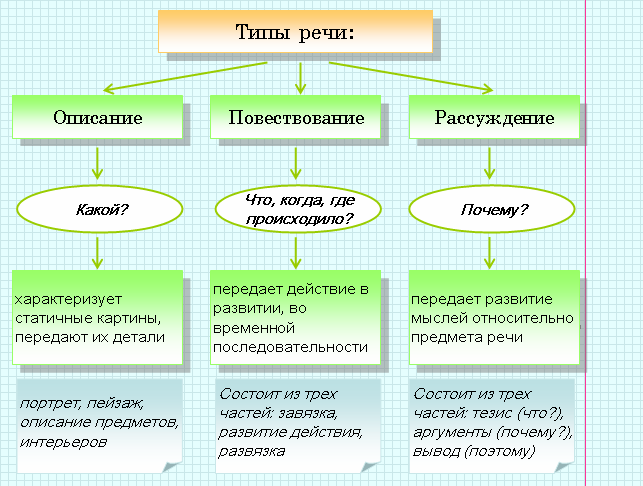

|
Текст − это речевое произведение, которое является результатом речевой деятельности человека, это основная коммуникативная единица, которая им используется во время речевой деятельности. |

|
Повествование − это рассказ о событиях, развивающихся во времени, поэтому особая роль отводится глаголу |
|
Описание − словесное изображение предмета или явления путем перечисления его характерных признаков. В описании широко используются эпитеты, метафоры, сравнения |
|
Рассуждение − это последовательное изложение мыслей, представляющее собой доказательство какого-либо тезиса или его раскрытие. Для рассуждения характерно более сложное построение предложений, использование слов с отвлеченным значением |
|
Основные признаки, свойственные тому или иному типу речи, могут проявляться и сочетаться не только в целом тексте, но и в определённых его частях, фрагментах, абзацах и даже отдельных предложениях |